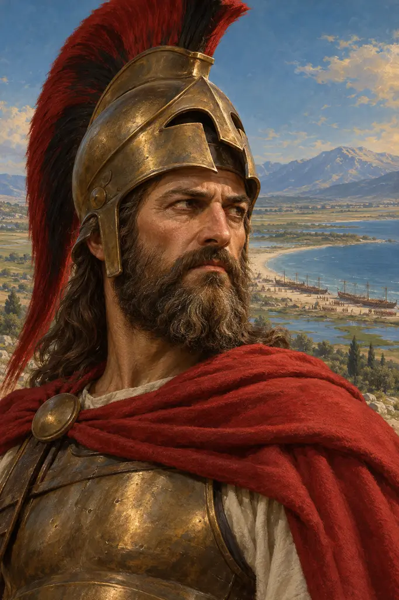
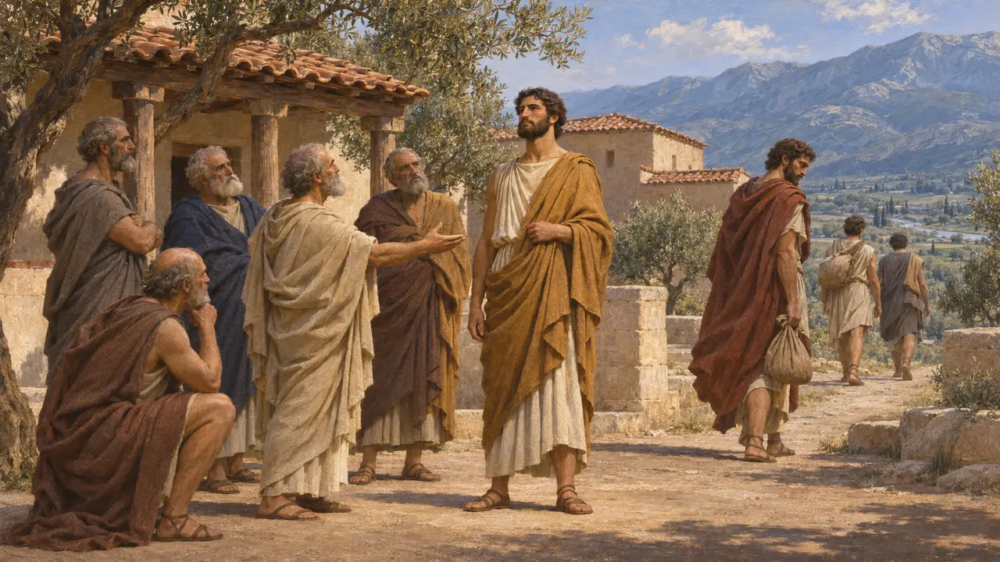
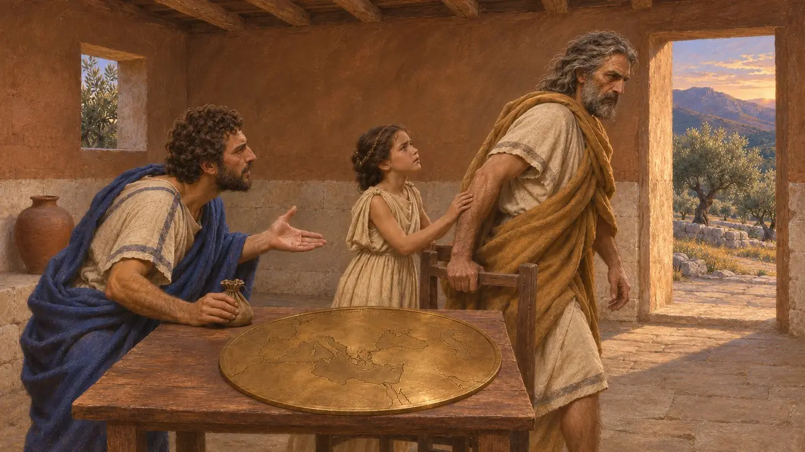
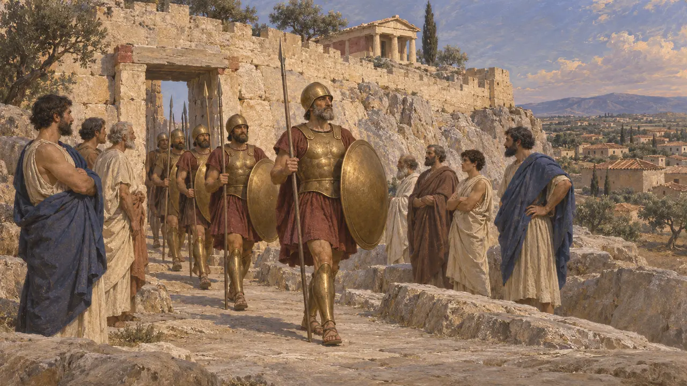
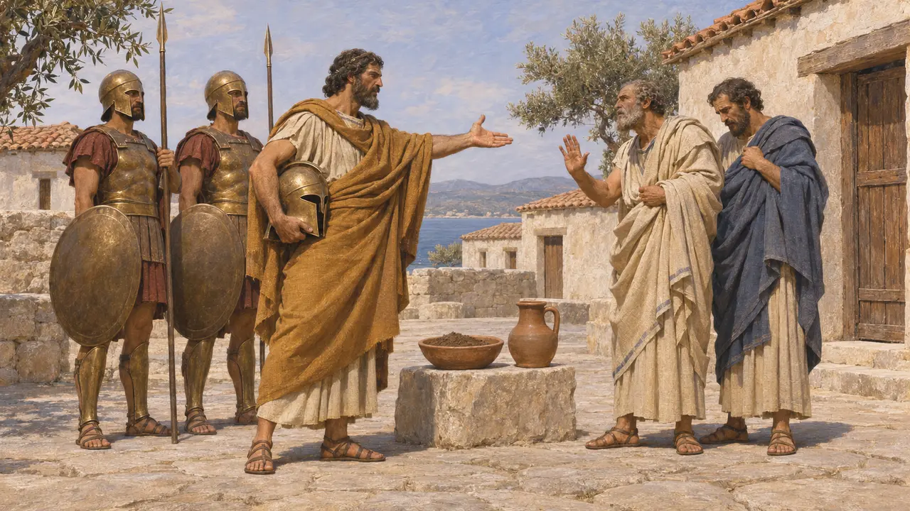
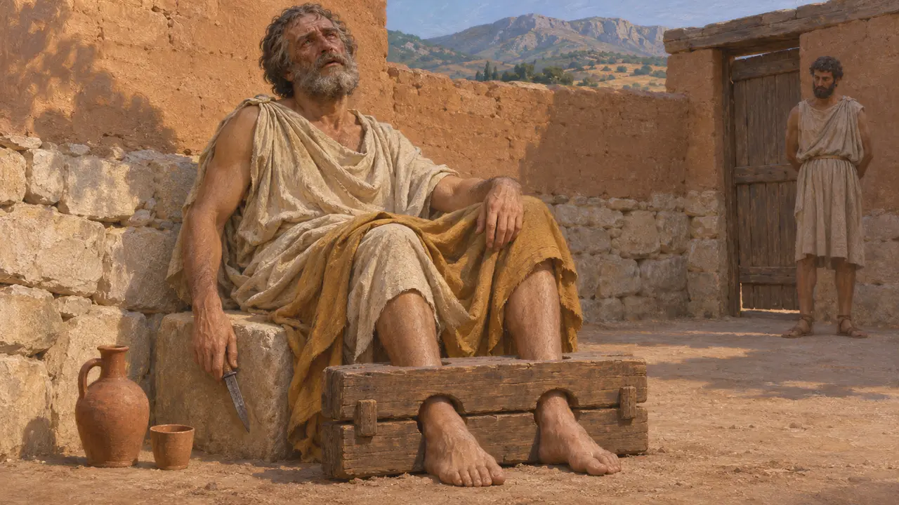

Cleômenes I foi o rei ágida de Esparta de cerca de 520 AEC a cerca de 490 AEC. Expulsou de Atenas o tirano Hípias, esmagou Argos em Sepeia e rejeitou Aristágoras de Mileto quando os jônios buscaram ajuda contra a Pérsia; depois afastou do trono seu colega de realeza, Demarato, que fugiu para junto de Dario. Quase tudo o que se sabe dele vem de Heródoto, cujo retrato é em grande parte hostil.
No jogo: O jogo cita Cleômenes apenas em sua crônica, como o rei espartano que recusou o pedido de Aristágoras ao saber quão longe no interior ficava Susa, seguindo Heródoto 5.49-51.

Um rei da casa dos Ágidas
Relato antigoHeródoto conta que Cleômenes era filho de Anaxândridas com uma segunda esposa, que os éforos obrigaram o rei a tomar porque seu primeiro casamento não tivera filhos. A primeira esposa deu à luz mais tarde Dorieu, Leônidas e Cleômbroto. Cleômenes sucedeu ao pai como filho mais velho, provavelmente por volta de 520 AEC. Heródoto acrescenta que Dorieu, preterido, deixou Esparta para fundar colônias no estrangeiro.
Herodotus 5.39-42

Aristágoras e a estrada para Susa
Relato antigoPor volta de 499 AEC, Aristágoras chegou a Esparta com um mapa do mundo gravado em bronze e insistiu num ataque contra o Rei. Heródoto conta que Cleômenes perguntou a que distância Susa ficava do litoral. Ao saber que eram três meses de viagem, ordenou que o milésio deixasse Esparta antes do pôr do sol. Aristágoras então ofereceu subornos cada vez maiores, e a jovem filha de Cleômenes, Gorgo, advertiu o pai de que o estrangeiro o corromperia; por isso, ele deixou a sala.
Herodotus 5.49-51

Intervenções em Atenas
Relato antigoEm 510 AEC, Cleômenes liderou a força espartana que expulsou Hípias e sua família de Atenas. Alguns anos depois, voltou para apoiar Iságoras contra Clístenes, mas os atenienses o sitiaram na Acrópole e ele partiu sob uma trégua. Sua invasão maior da Ática, por volta de 506 AEC, desfez-se em Elêusis quando os coríntios e Demarato, o outro rei espartano, se retiraram.
Herodotus 5.64-76

Egina, Demarato e a Pérsia
Relato antigoQuando os arautos de Dario pediram terra e água aos gregos, por volta de 491 AEC, Egina se submeteu, e Cleômenes foi prender os responsáveis, mas Demarato agiu contra ele. Heródoto conta que Cleômenes então se aliou a Leotíquides e, por meio de um intermediário subornado, fez o oráculo de Delfos declarar Demarato ilegítimo. O rei deposto fugiu para junto de Dario, recebeu terras e cidades na Ásia e mais tarde acompanhou Xerxes em 480 AEC.
Herodotus 6.48-51, 6.61-70

Loucura e morte
DisputadoHeródoto relata que, quando a trama de Delfos veio à tona, Cleômenes fugiu, foi chamado de volta, enlouqueceu e se matou retalhando o próprio corpo com uma faca enquanto estava no tronco, provavelmente por volta de 490 AEC. A maioria dos gregos culpou o oráculo subornado; os atenienses, a devastação que ele causou no recinto sagrado de Elêusis; e os argivos, a matança de suplicantes e o incêndio de seu bosque após Sepeia. Os espartanos culparam o vinho puro, hábito aprendido com emissários citas; alguns historiadores modernos suspeitam de assassinato.
Herodotus 6.74-84
Fontes
- Herodotus, Histories, books 5 and 6
- P. Cartledge, Sparta and Lakonia, 1979
- W. G. Forrest, A History of Sparta, 1968
- P. Briant, From Cyrus to Alexander, 2002